pacman::p_load(corrplot, ggstatsplot, tidyverse)Hands-on_Ex05-2
Visual Correlation Analysis
1 Overview
Correlation coefficient is a popular statistic that use to measure the type and strength of the relationship between two variables. A correlation coefficient of 1 shows a perfect linear relationship between the two variables, while a -1.0 shows a perfect inverse relationship between the two variables. A correlation coefficient of 0.0 shows no linear relationship between the two variables.
When multivariate data are used, the correlation coefficeints of the pair comparisons are displayed in a table form known as correlation matrix or scatterplot matrix.
When the data is large, both in terms of the number of observations and the number of variables, Corrgram tend to be used to visually explore and analyse the structure and the patterns of relations among variables.
We will learn:
- How to create correlation matrix using
pairs()of R Graphics. - How to plot corrgram using corrplot package of R.
- How to create an interactive correlation matrix using plotly R.
2 Getting started
Use the code below to install and launch corrplot, ggpubr, plotly and tidyverse in R studio.
In this hands-on exercise, the Wine Quality Data Set of UCI Machine Learning Repository will be used. The data set consists of 13 variables and 6497 observations. For the purpose of this exercise, we have combined the red wine and white wine data into one data file. It is called wine_quality and is in csv file format.
wine <- read_csv("data/wine_quality.csv")Beside quality and type, the test of the variables are numerical and continuous data type.
Use glimpse() to have a look at the columns run down the page, and data runs across.
glimpse(wine)Rows: 6,497
Columns: 13
$ `fixed acidity` <dbl> 7.4, 7.8, 7.8, 11.2, 7.4, 7.4, 7.9, 7.3, 7.8, 7…
$ `volatile acidity` <dbl> 0.700, 0.880, 0.760, 0.280, 0.700, 0.660, 0.600…
$ `citric acid` <dbl> 0.00, 0.00, 0.04, 0.56, 0.00, 0.00, 0.06, 0.00,…
$ `residual sugar` <dbl> 1.9, 2.6, 2.3, 1.9, 1.9, 1.8, 1.6, 1.2, 2.0, 6.…
$ chlorides <dbl> 0.076, 0.098, 0.092, 0.075, 0.076, 0.075, 0.069…
$ `free sulfur dioxide` <dbl> 11, 25, 15, 17, 11, 13, 15, 15, 9, 17, 15, 17, …
$ `total sulfur dioxide` <dbl> 34, 67, 54, 60, 34, 40, 59, 21, 18, 102, 65, 10…
$ density <dbl> 0.9978, 0.9968, 0.9970, 0.9980, 0.9978, 0.9978,…
$ pH <dbl> 3.51, 3.20, 3.26, 3.16, 3.51, 3.51, 3.30, 3.39,…
$ sulphates <dbl> 0.56, 0.68, 0.65, 0.58, 0.56, 0.56, 0.46, 0.47,…
$ alcohol <dbl> 9.4, 9.8, 9.8, 9.8, 9.4, 9.4, 9.4, 10.0, 9.5, 1…
$ quality <dbl> 5, 5, 5, 6, 5, 5, 5, 7, 7, 5, 5, 5, 5, 5, 5, 5,…
$ type <chr> "red", "red", "red", "red", "red", "red", "red"…3 Build Correlation Matrix: pairs() method
We will use pairs function of R Graphics to create a scatterplot matrix. There are many other ways to do so, too. See pairs function.
Usage
pairs(x, ...)
## S3 method for class 'formula'
pairs(formula, data = NULL, ..., subset,
na.action = stats::na.pass)
## Default S3 method:
pairs(x, labels, panel = points, ...,
horInd = 1:nc,
verInd = 1:nc,
lower.panel = panel,
upper.panel = panel,
diag.panel = NULL,
text.panel = textPanel,
label.pos = 0.5 + has.diag/3,
line.main = 3,
cex.labels = NULL, font.labels = 1,
row1attop = TRUE, gap = 1,
log = "",
horOdd = !row1attop,
verOdd = !row1attop)3.1 Build a basic correlation matrix
Figure below shows the scatterplot matrix of Wine Quality Data: 11x11 matrix.
Show the code
par(bg = "#f1f4f5")
pairs(wine[,1:11],
main = "Correlation Matrix")
Figure below shows scatterplot matrix with different variables columns 2 to 12 of wine dataframe: fixed acidity, volatile acidity, citric acid, residual sugar, chlorides, free sulfur dioxide, total sulfur dioxide, density, pH, sulphates and alcohol.
Show the code
par(bg = "#f1f4f5")
pairs(wine[,2:12],
main = "Correlation Matrix with 2:12 vars")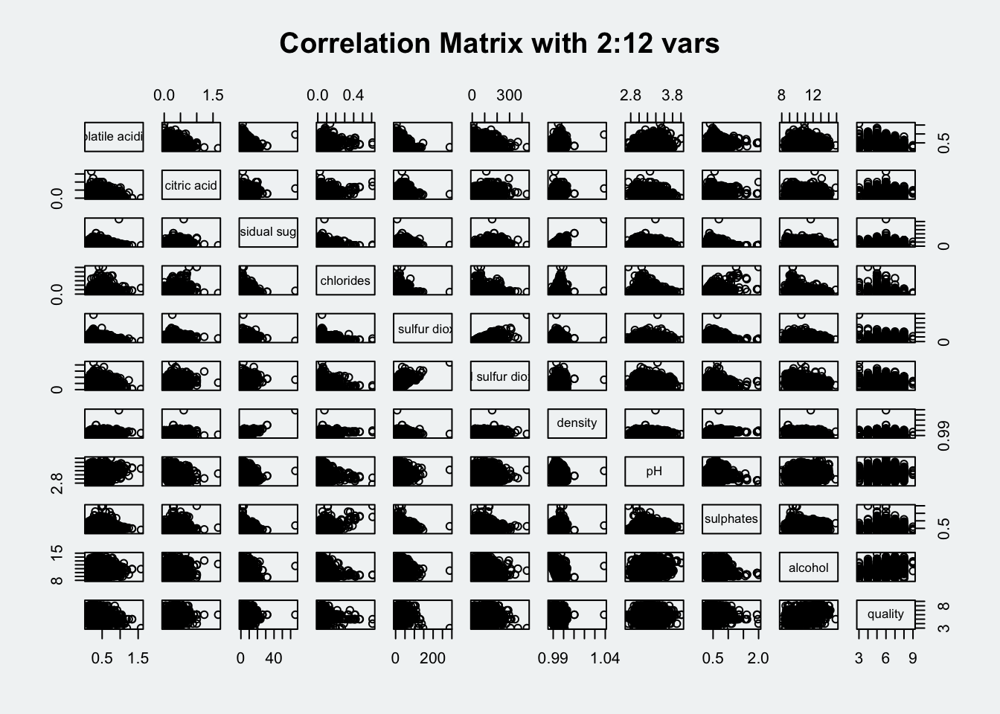
Figure below shows scatterplot matrix with chosen variables: total sulfur dioxide, density, pH, sulphates and alcohol.
Show the code
par(bg = "#f1f4f5")
pairs(wine[, c("total sulfur dioxide", "density", "pH", "sulphates", "alcohol")],
main = "Correlation Matrix with 2:12 vars")
3.2 Draw the lower corner
To show the lower half of the correlation matrix, the upper.panelargument will be used as shown in the code chunk below.
Show the code
par(bg = "#f1f4f5")
pairs(wine[,2:12], upper.panel = NULL)
We can also display the upper half.
Show the code
par(bg = "#f1f4f5")
pairs(wine[,2:12], lower.panel = NULL)
3.3 Include correlation coefficients
To show the correlation coefficient of each pair of variables instead of a scatter plot, panel.cor function will be used. This will also show higher correlations in a larger font.
Show the code
par(bg = "#f1f4f5")
panel.cor <- function(x, y, digits = 2, prefix = "", cex.cor, ...) {
usr <- par("usr")
on.exit(par(usr))
par(usr = c(0, 1, 0 , 1))
r <- abs(cor(x, y, use = "complete.obs"))
txt <- format(c(r, 0.123456789), digits = digits)[1]
text <- paste(prefix, txt, sep = "")
if(missing(cex.cor)) cex.cor <- 0.8/strwidth(txt)
text(0.5, 0.5, txt, cex = cex.cor * (1 + r) / 2)
}
pairs(wine[, 2:12],
upper.panel = panel.cor)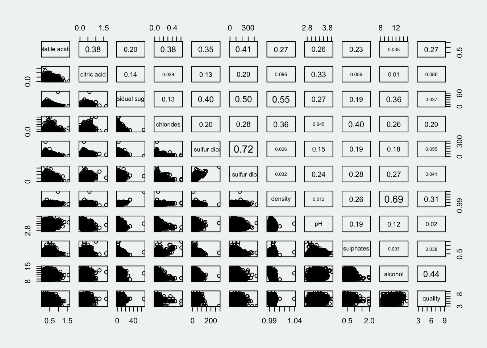
4 Visualise Correlation Matrix: ggcormat()
Correlation matrix with scatterplot can look cluttered when observations are more than 500. Corrgram data visualisation technique suggested by D. J. Murdoch and E. D. Chow (1996) and Friendly, M (2002) and will be used. 3 R packages will be used to plot corrgram: corrgram, ellipse and corrplot.
Here we will visualise correlation matrix with ggcorrmat() of ggstatsplot package.
4.1 The basic plot
Advantage of using ggcormat() over many other methods to visualise correlation matrix is its ability to provide a comprehensive and statistical report.
ggcorrmat() uses the following default arguments:
matrix.type= “upper”sig.level= 0.05conf.level= 0.95
Show the code
ggstatsplot::ggcorrmat(
data = wine,
cor.vars = 1:11,
ggcorrplot.args = list(
lab_size = 2.8,
tl.cex = 8,
pch.cex = 8
)
)
Show the code
ggstatsplot::ggcorrmat(
data = wine,
cor.vars = 1:11,
colors = c("#ed939d", "#fcfaf8", "#82afd9"),
ggcorrplot.args = list(outline.color = "black",
hc.order = TRUE,
lab_size = 2.8,
tl.cex = 8,
pch.cex = 8),
title = "Corrlogram for wine dataset",
subtitle = "Four pairs are no significant at p< 0.05"
)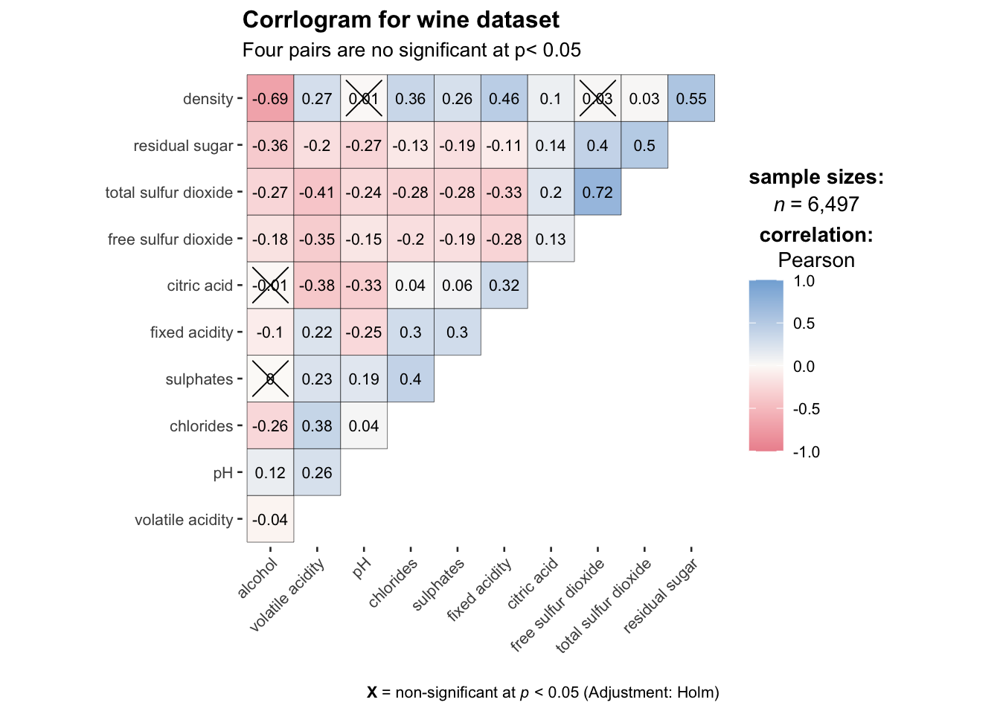
Note
cor.varsargument is used to compute the correlation matrix needed to build the corrgram.ggcorrplot.args argument provide additional (mostly aesthetic) arguments that will be passed to ggcorrplot::ggcorrplot function. The list should avoid any of the following arguments since they are already internally being used: corr,
method,p.mat,sig.level,ggtheme,colors,lab,pch,legend.title,digits.The sample sub-code chunk can be used to control specific component of the plot such as the font size of the x-axis, y-axis, and the statistical report.
ggplot.component = list(
theme(text = element_text(size = 5),
axis.text.x = element_text(size = 8),
axis.text.y = element_text(size = 8))
)5 Build Multiple plots
ggstasplot is an extension of ggplot2, so also supports faceting. However the feature is in the grouped_ggcorrmat() of ggstatsplot.
#| code-fold: true
#| code-summary: "Show the code"
grouped_ggcorrmat(
data = wine,
cor.vars = 1:11,
grouping.var = type,
type = "robust",
colors = c("#ed939d", "#fcfaf8", "#82afd9"),
p.adjust.method = "holm",
plotgrid.args = list(ncol = 2),
ggcorrplot.args = list(outline.color = "black",
hc.order = TRUE,
lab_size = 4,
tl.cex = 12,
pch.cex = 9
),
annotation.args = list(
tag_levels = "a",
title = "Correlogram for wine dataset",
subtitle = "The measures are: alcohol, sulphates, fixed acidity, citric acid, chlorides, residual sugar, density, free sulfur dioxide and volatile acidity",
caption = "Dataset: UCI Machine Learning Repository"
)
) 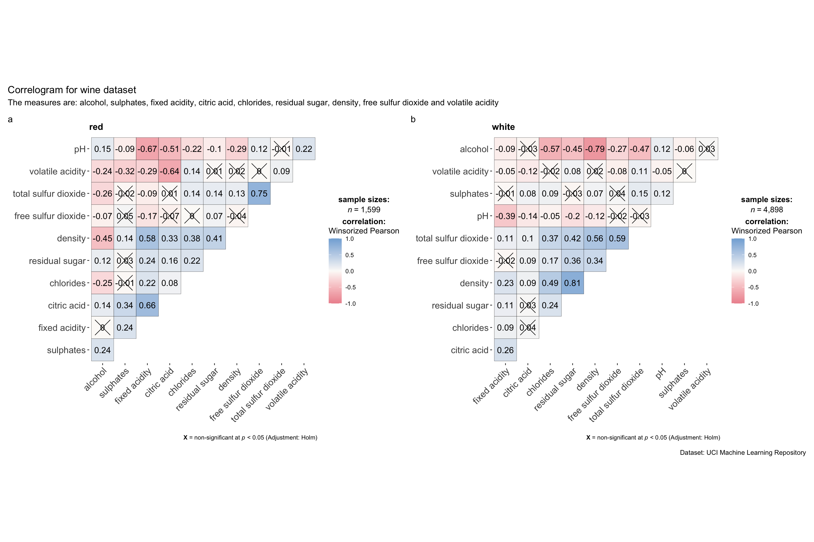
Note
Use
fig-widthandfig-heightto adjust the spaces.To build a facet plot, the only argument needed is
grouping.var.Behind group_ggcorrmat(), patchwork package is used to create the multiplot.
plotgrid.argsargument provides a list of additional arguments passed to patchwork::wrap_plots, except for guides argument which is already separately specified earlier.Likewise,
annotation.argsargument is calling plot annotation arguments of patchwork package.
6 Visualise Correlation Matrix Using Corrplot Pakcage
🔆 Resource: An Introduction to corrplot Package
6.1 Get started with corrplot
- Compute the correlation matrix of wine data frame
wine.cor <- cor(wine[,1:11])- Use corrplot() to plot the corrgram by using all the default settings.
par(bg = "#f1f4f5")
corrplot(wine.cor)
The default settings
- visual object used to plot the coorgram: circle
- layout of the corrgram: symmetric matrix
- color scheme: diverging blue-red
- The intensity of the colour or also know as saturation is used to represent the strength of the correlation coefficient.
- Darker colours indicate relatively stronger linear relationship between the paired variables
More settings
matrix.type: Character,"full"(default),"upper"or"lower", display full matrix, lower triangular or upper triangular matrix.method: Character argument that decides the visualization method of correlation matrix to be used. Allowed values aresquare(default),circlecorr.method: A character string indicating which correlation coefficient is to be computed (pearson(default) orkendallorspearman).robustcan also be entered but only ifoutputargument is set to eithercorrelationsorp-values. The robust correlation used is percentage bend correlation (see?WRS2::pball). Abbreviations will also work:"p"(for parametric/Pearson’s r),"np"(nonparametric/Spearman’s rho),r(robust).digits: Decides the number of decimal digits to be displayed (Default:2)sig.level: Significance level (Default:0.05). If the p-value in p-value matrix is bigger thansig.level, then the corresponding correlation coefficient is regarded as insignificant and flagged as such in the plot. This argument is relevant only whenoutput = "plot".ggtheme:
A function,ggplot2theme name. Default value isggplot2::theme_bw(). Any of theggplot2themes, or themes from extension packages are allowed (e.g.,ggthemes::theme_fivethirtyeight(),hrbrthemes::theme_ipsum_ps(), etc.).subtitle: The text for the plot subtitle.lab.col: Color to be used for the correlation coefficient labels (applicable only whenlab = TRUE).lab.size: Size to be used for the correlation coefficient labels (applicable only whenlab = TRUE).messages: Decides whether messages references, notes, and warnings are to be displayed (Default:TRUE).outline= to draw the black outline of the correlation objects such as circles or squares.addgrid.col= to determine the color of the grids. Would dissapear if NA.order= the order of the columns. If not specified it is plotted as in the original matrix, but sometimes it is not so informative. Possible methods are: “AOE” (angular order of the eigenvectors), “FPC” (first principal component), “hclust”, “alphabet”. There is also hclust.method to determine the agglomeration method if the order is “hclust”.addrect= when the order is “hclust”, determines the number of rectangles according to the hierarchical cluster. rect.something arguments are about the rectangles added according to this argument.cl.something= these are the arguments about the color legend.tl.something= these are the arguments about the text labels.
6.2 Work with visual geometrics
In corrplot package, there are seven visual geometrics (parameter method) can be used to encode the attribute values. They are: circle, square, ellipse, number, shade, color and pie. The default is circle, like the figure in 6.1.
The default setting can be changed by using the method argument. See the code below:
Show the code
par(bg = "#f1f4f5")
corrplot(wine.cor,
method = "ellipse",
tl.srt = 45,
bg = "#f1f4f5",
title = "Correlation Plot with Ellipse")
Show the code
par(bg = "#f1f4f5")
corrplot(wine.cor,
method = "square")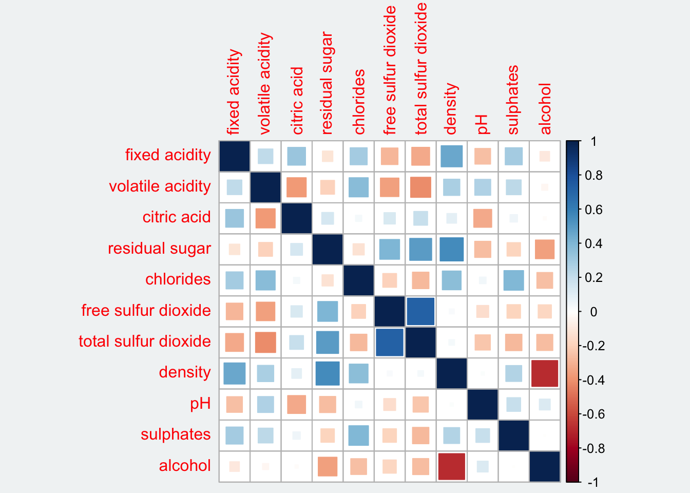
Show the code
par(bg = "#f1f4f5")
corrplot(wine.cor,
method = "number",
number.cex = 0.65,
tl.srt = 45,
bg = "#f1f4f5",
title = "Correlation Plot with Number")
Show the code
par(bg = "#f1f4f5")
corrplot(wine.cor,
method = "shade",
tl.srt = 45,
bg = "#f1f4f5",
title = "Correlation Plot with Shade")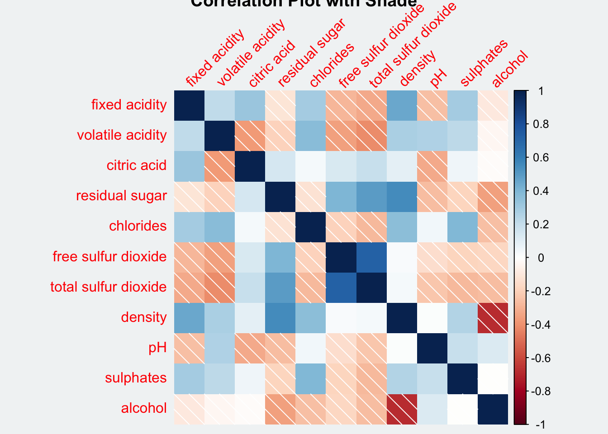
Show the code
par(bg = "#f1f4f5")
corrplot(wine.cor,
method = "color",
tl.srt = 45,
bg = "#f1f4f5",
title = "Correlation Plot with Color")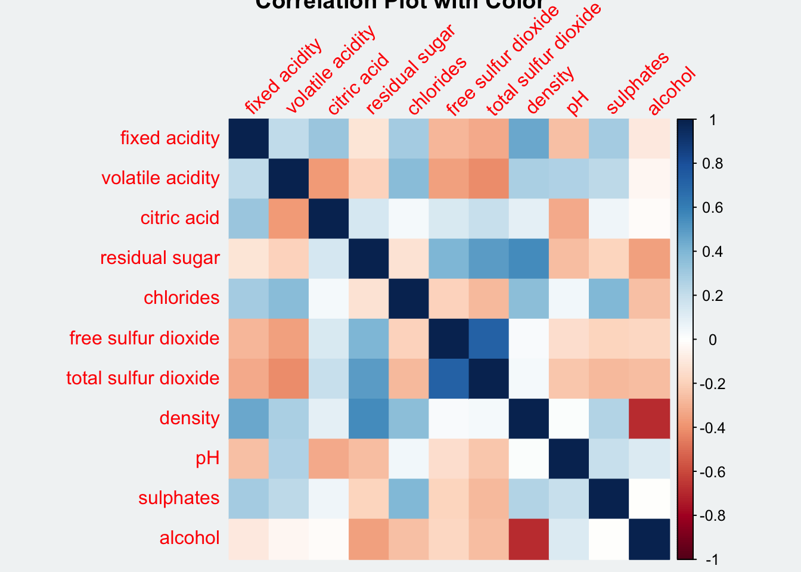
Show the code
par(bg = "#f1f4f5")
corrplot(wine.cor,
method = "pie",
tl.srt = 45,
bg = "#f1f4f5",
title = "Correlation Plot with Pie")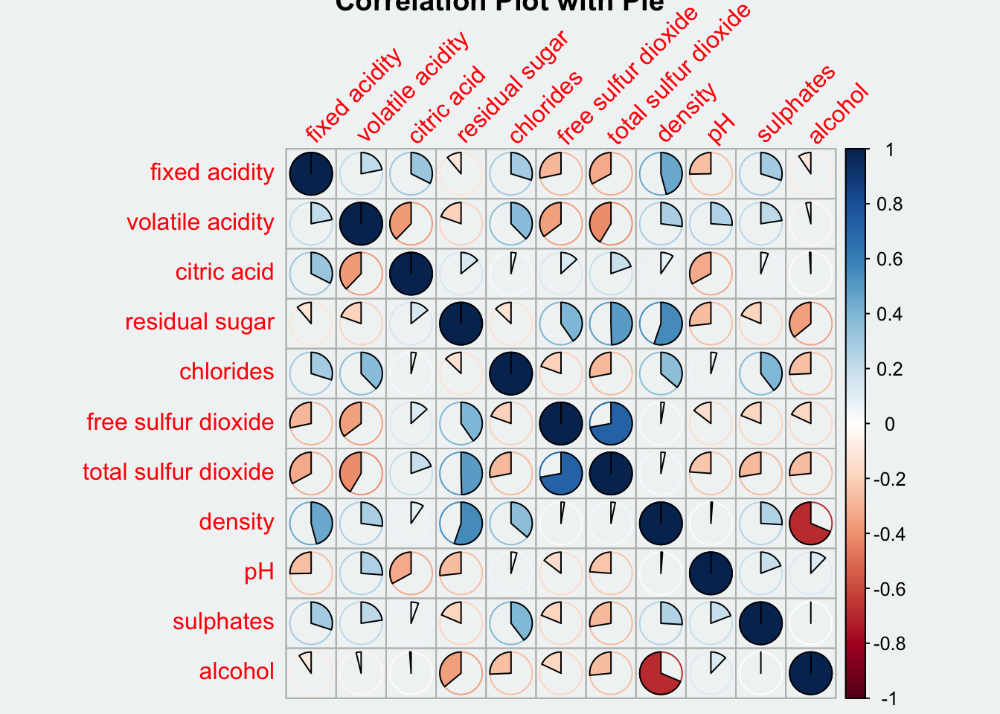
addrect argument sets the value in numbers representing the number of clusters.
Show the code
par(bg = "#f1f4f5")
corrplot(wine.cor,
method = "ellipse",
outline = T,
addgrid.col = "darkgray",
order="hclust",
addrect = 4,
rect.col = "black",
rect.lwd = 5,
cl.pos = "b",
tl.col = "indianred4",
tl.cex = 0.6,
tl.srt = 45,
bg = "#f1f4f5",
#addCoef.col = "white",
#number.digits = 2,
#number.cex = 0.75,
title="Correlation Plot with Ellipses and Clusters")
6.3 Work with layout
corrplor() supports three layout types, namely: full, upper or lower. The default is full which display full matrix. The default setting can be changed by using the type argument of corrplot().
Show the code
par(bg = "#f1f4f5")
corrplot(wine.cor,
method = "ellipse",
type = "lower",
tl.srt = 45,
title = "Correlation Plot - Lower Type")
To turn off the diagonal cells:
diagTo change the axis text label colour:
tl.col
Show the code
par(bg = "#f1f4f5")
corrplot(wine.cor,
method = "ellipse",
type = "lower",
diag = FALSE,
tl.col = "black",
tl.cex = 0.5,
tl.offset = 1.5,
tl.srt = 45,
cl.cex = 0.5,
cl.offset = 1,
title = "Correlation Plot - Text Label in Black")
6.4 Work with mixed layout
To create a coorgram with mixed layout, the corrplot.mixed(), a wrapped function for mixed visualisation style will be used.
Show the code
par(bg = "#f1f4f5")
corrplot.mixed(wine.cor,
lower = "ellipse",
upper = "number",
tl.pos = "lt",
diag = "l",
tl.col = "black",
tl.cex = 0.6,
tl.srt = 45,
number.cex = 0.5)
Note that argument lower and upper are used to define the visualisation method used. In this case ellipse is used to map the lower half of the corrgram and numerical matrix (i.e. number) is used to map the upper half of the corrgram.
The argument tl.pos, on the other, is used to specify the placement of the axis label.
Lastly, the diag argument is used to specify the glyph on the principal diagonal of the corrgram.
6.5 Combine corrgram with the significant test
We are also interested to know which pair of variables their correlation coefficient are statistically significant. Figure below shows a corrgram combined with the significant test. The corrgram reveals that not all correlation pairs are statistically significant.
With corrplot package, we can use the cor.mtest() to compute the p-values and confidence interval for each pair of variables.
wine.sig = cor.mtest(wine.cor,
conf.level = .95)We can then use the p.mat argument of corrplot function as shown in the code chunk below.
Show the code
par(bg = "#f1f4f5")
corrplot(wine.cor,
method = "number",
type = "lower",
diag = FALSE,
tl.col = "black",
tl.srt = 45,
tl.cex = 0.6,
number.cex = 0.7,
p.mat = wine.sig$p,
sig.level = .05)
6.6 Reorder a corrgram
Matrix reorder is very important for mining the hiden structure and pattern in a corrgram. By default, the order of attributes of a corrgram is sorted according to the correlation matrix (i.e. “original”). The default setting can be over-write by using the order argument of corrplot(). Currently, corrplot package support four sorting methods, they are:
- “AOE” is for the angular order of the eigenvectors. See Michael Friendly (2002) for details.
- “FPC” for the first principal component order.
- “hclust” for hierarchical clustering order, and “hclust.method” for the agglomeration method to be used. It should be one of “ward”, “single”, “complete”, “average”, “mcquitty”, “median” or “centroid”.
- “alphabet” for alphabetical order. “AOE”, “FPC”, “hclust”, “alphabet”. More algorithms can be found in seriation package.
Show the code
par(bg = "#f1f4f5")
corrplot.mixed(wine.cor,
lower = "ellipse",
upper = "number",
tl.pos = "lt",
tl.srt = 45,
tl.cex = 0.6,
diag = "l",
order="AOE",
tl.col = "black")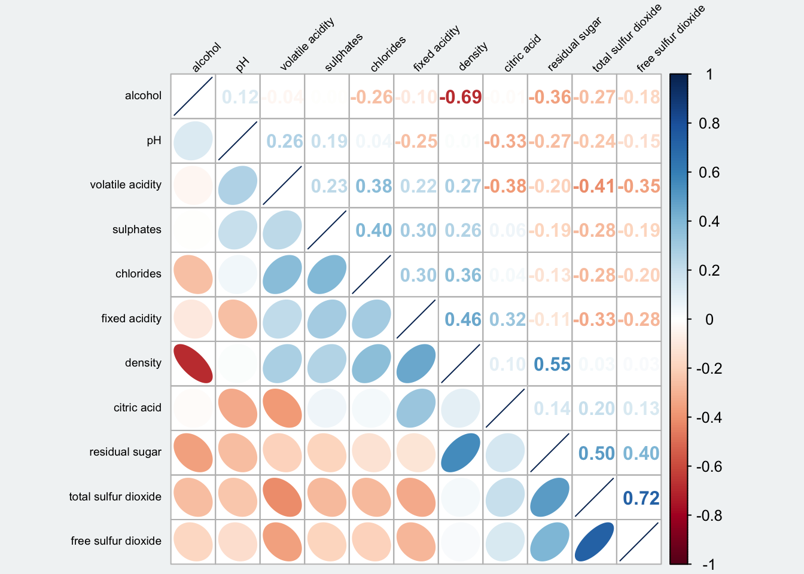
ggcormat()of ggstatsplot packagecorrplot. A graphical display of a correlation matrix or general matrix. It also contains some algorithms to do matrix reordering. In addition, corrplot is good at details, including choosing color, text labels, color labels, layout, etc.
corrgram calculates correlation of variables and displays the results graphically. Included panel functions can display points, shading, ellipses, and correlation values with confidence intervals.
6.7 Reorder a correlation matrix using hclust
If using hclust, corrplot()can draw rectangles around the corrgram based on the results of hierarchical clustering. addrect indicates the number of clusters.
Show the code
par(bg = "#f1f4f5")
corrplot(wine.cor,
method = "ellipse",
tl.pos = "lt",
tl.col = "black",
tl.cex = 0.6,
tl.srt = 45,
order = "hclust",
hclust.method = "ward.D",
addrect = 3
)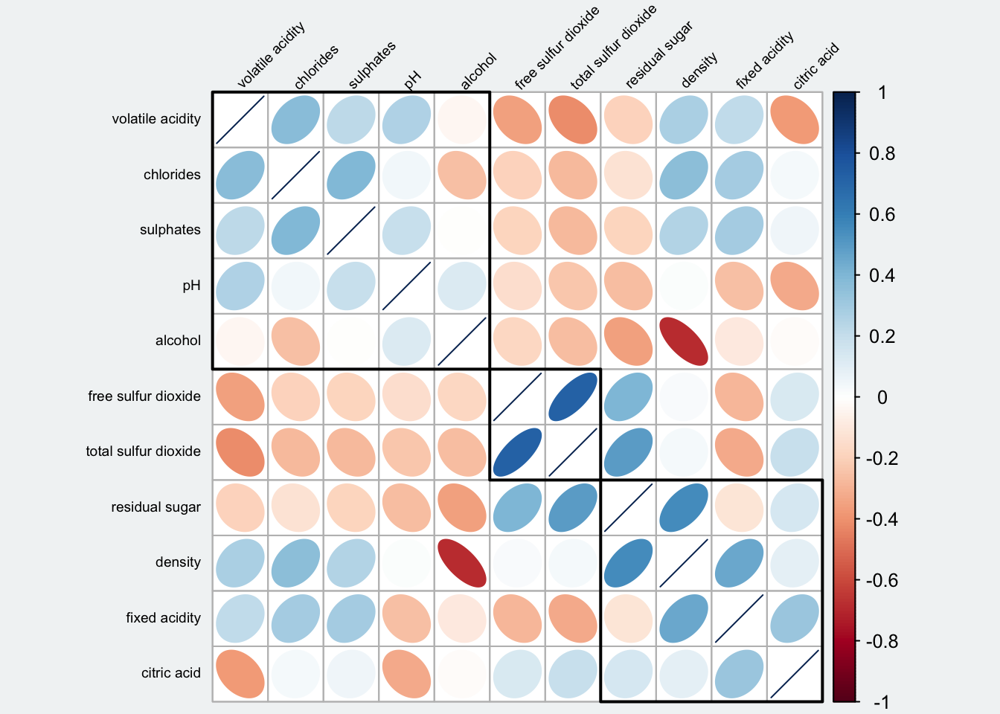
Show the code
par(bg = "#f1f4f5")
## text labels rotated 45 degrees and wider color legend with numbers right aligned
corrplot(wine.cor,
type = 'lower',
order = 'hclust',
tl.col = 'black',
tl.cex = 0.5,
cl.ratio = 0.2,
tl.srt = 45,
col = COL2('PuOr', 10))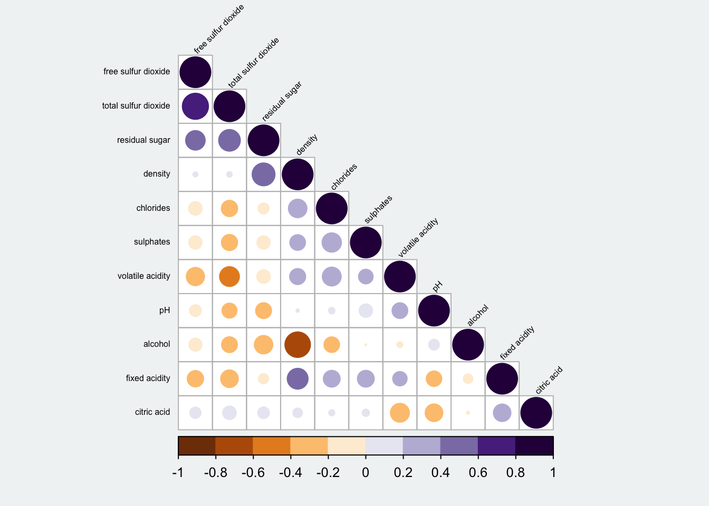
Show the code
par(bg = "#f1f4f5")
## text labels rotated 45 degrees and wider color legend with numbers right aligned
corrplot(wine.cor,
type = "upper",
order = "hclust",
hclust.method = "ward.D",
tl.col = 'black',
tl.cex = 0.5,
tl.srt = 45,
col = c('white', 'black'),
bg = "gold2")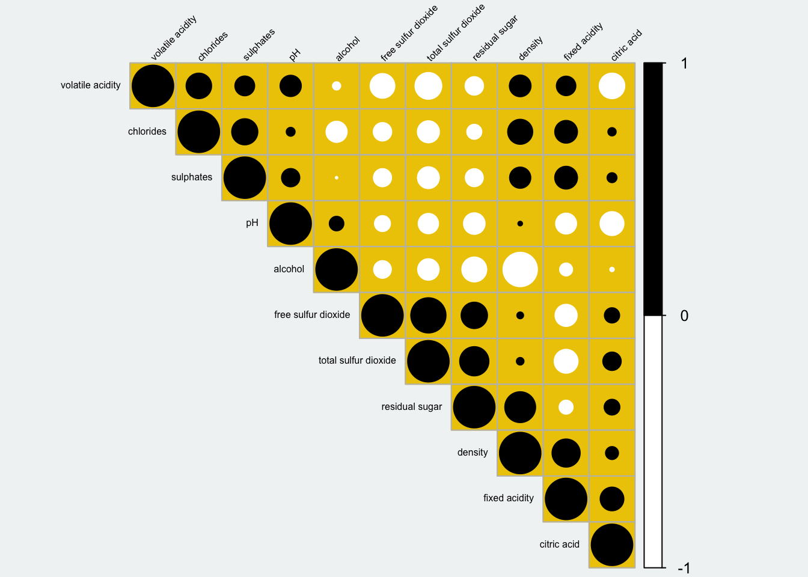
7 Reference
Michael Friendly (2002). “Corrgrams: Exploratory displays for correlation matrices”. The American Statistician, 56, 316–324.
D.J. Murdoch, E.D. Chow (1996). “A graphical display of large correlation matrices”. The American Statistician, 50, 178–180.